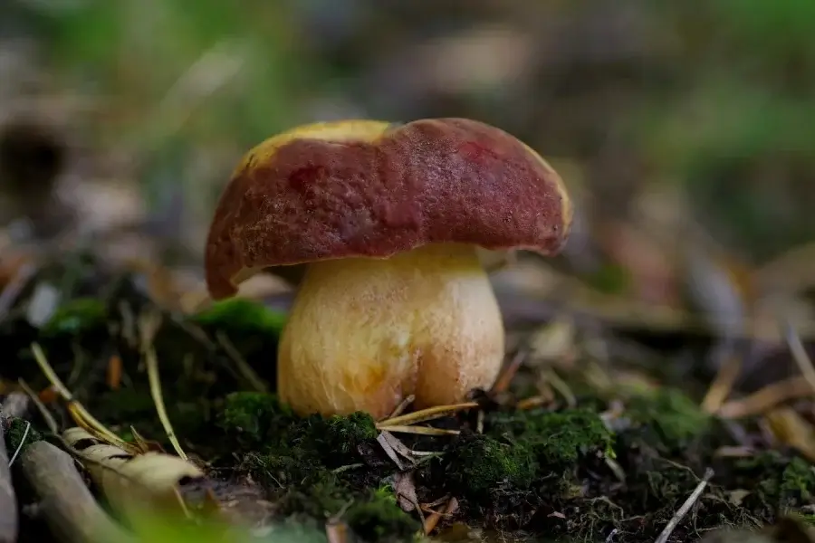
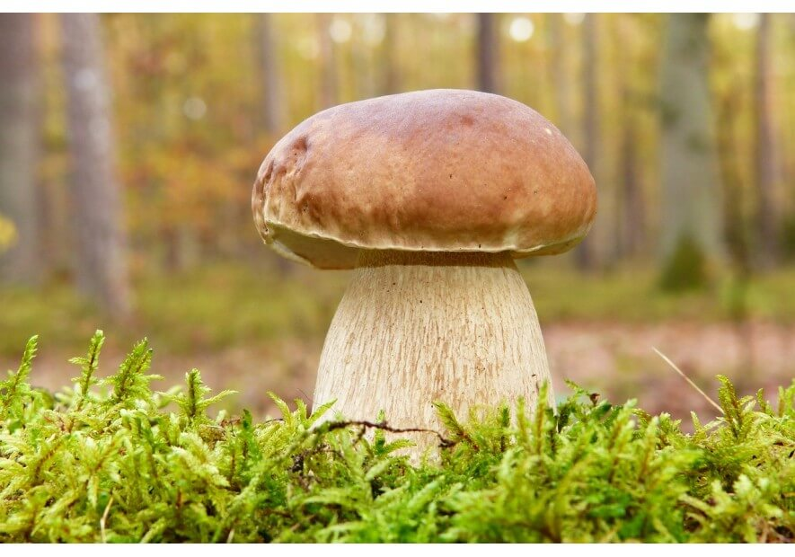

grzyby to nie rośliny i daleko im też do zwierząt. Nie mają kwiatów, liści, ani korzeni.
Grzyby to oprócz naziemnej części, którą widzimy w lesie, system nitek/strzępek zwanych grzybnią ciągnących się w podłożu, na którym rośnie grzyb.
Wiele grzybów rośnie w symbiozie tylko z konkretnym rodzajem drzewa.
Grzyby mają właściwości antybakteryjne, mogą pomóc obniżyć poziom cholesterolu w organizmiea także korzystnie wpływają na układ odpornościowy. Niektóre gatunki są pomocne w zapobieganiu lub leczeniu: choroby Parkinsona, choroby Alzheimera, wysokiego ciśnienia krwi i rakaMój cytat
Rurki borowika szlachetnego są drobne, u młodych grzybów mają kolor biały lub kremowy, a u starszych żółto- lub zielonooliwkowy. Trzon (nóżka) grzyba jest jasna: biała, szarobiała lub piaskowa, pokryta delikatną siateczką o białym lub jasnobrązowym zabarwieniu.Borowiki możemy spotkać także głównie jesienią, natomiast okres ich wzrostu wynosi około pięciu dni. Nie bez przyczyny mówi się, że na grzyby wybieramy się po deszczu. Zaskakującym grzybem jest gąska zielona, która rośnie od października, aż do grudnia. Aby ją zebrać, warto zaglądać do lasu mniej więcej co trzy dni.
Borowik szlachetny jest jednym z najsmaczniejszych i najbogatszych w wartości odżywcze grzybów występujących w polskich lasach. Adam Mickiewicz w „Panu Tadeuszu” nazwał go pułkownikiem wśród grzybów. Nie bez powodu - prawdziwek wyróżnia się bowiem dostojnym wyglądem, pięknym zapachem i wybornym smakiem.